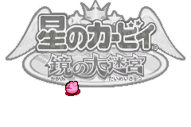
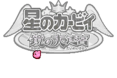

Hoshi no Kirby - Kagami no Daimeikyuu (Japan) (Rev 1) (Virtual Console)
SRAM 256K Save Format Mapped (Family Spec) 📺 Joybus 💾 MultiBoot 🎮 4P Link 🔌 Game Boy Player Rumble (libgbp)
Cartridge Identity
- Game Code
B8KJ(FamilyB8K)- Header Title
AGB KIRBY AM- Maker / Revision
01/ rev1- ROM Size
- 16.0 MiB (16,777,216 B)
- Save Media
SRAM 256K- SHA-256
04d081f3a97a1bfc262d2655f7b869c37c3af9f7e6bb216523ffd500cda4f04b- Engine / SDK Group
comm-016(22 families)
Screenshots


Niche & Rare Accessories
Detected niche/rare GBA accessory support: 🔌 Game Boy Player Rumble (libgbp).
Full 343-ROM corpus breakdown in the Cartridge Hardware & Niche Accessories Reference · auto-detected from ROM bytes via
gbakit inspect.
- Game Boy Player Rumble (libgbp)
- SIO
0x04000120· ACK0x8002@0x158b84
Link Cable & Multiplayer Communications
This title contains detected communication capabilities: 📺 Joybus 💾 MultiBoot 🎮 4P Link.
Detailed protocol specifications, SIO registers, Joybus commands, and MultiBoot sequences are documented in the Link & Multiplayer Reference.
- Multi-Player SIO (4P)
- 16-bit ring network · SIOCNT (
0x04000128) literals:0x01fa5c,0x0302a8,0x030328· SIODATA32/SIOMULTI0 (0x04000120) literals:0x030964,0x031674,0x1577f0 - GameCube Joybus
- Register literal
REG_JOYCNT(0x04000140) at offset0x125b50 - GameCube Joybus
- Register literal
REG_JOYCNT(0x04000140) at offset0x125d48 - Single-Cart MultiBoot
- Single-Cartridge MultiBoot (Download Play) client/server handler · Thumb SWI 0x25 (
0xDF25):0x1592ce,0x16bb5a,0x25f826,0x27f858
Battery Save Format Specification (Family Shared)
This release shares its save architecture with canonical family reference Kirby & The Amazing Mirror (USA) (Family
B8K).
Open Family Save Format Spec (B8KE)Download save-format.json
- Canonical Specification
B8KE· 4 mapped fields · 1 verified checksum(s) · Confidence: HIGH- gbakit Built-In Support
- Built-in (B8KE)
gbakit save verify B8KE save.sav
gbakit save decode B8KE save.sav
gbakit save fix B8KE damaged.sav -o repaired.savObserved Battery Save Layout
- Fill Byte & Active Size
0xFFfill · 4,736–4,736 / 32,768 B active (entropy 0.00 bits/B)- Active Offset Ranges
0x0–0x1,0x4–0xD,0x10–0x19,0x1C–0x32D,0x330–0x641,0x644–0x955,0x958–0xC69,0xC6C–0xF7D, +1 more (9 total)- ASCII Magic / Headers
- None detected
- Observed Variable Regions
- 0 bytes across 0 spans: None
- Candidate Checksum/Counter Spans
- None
Text, Fonts & Scene Data
- Primary Text Encoding
- 16-bit / UTF-16LE text (
9ASCII strings ·2Shift-JIS runs) - Font & VWF Indicators
- VWF Width Table 1bpp Font · BIOS SWIs: BitUnPack
0x10:7· LZ770x11/12:8· Huffman0x13:5· RLE0x14/15:11 - Scene & Packaging
46ROM pointer tables (≥32 entries,16≥200) ·6relativeu32TOCs ·291OAM metasprite hits
Hardware MMIO Subsystems
ppu_display0x8151d84,0x81550e8save_bus_sram_flash0x800a9f0,0x800aadc
Regional Variants & Revisions (Family B8K)
- Hoshi no Kirby - Kagami no Daimeikyuu (Japan) (Rev 1) (
B8KJ, 16 MiB) - Kirby & The Amazing Mirror (Europe) (En,Fr,De,Es,It) (
B8KP, 16 MiB) - Kirby & The Amazing Mirror (Europe) (En,Fr,De,Es,It) (Virtual Console) (
B8KP, 16 MiB) - Kirby & The Amazing Mirror (USA) (
B8KE, 16 MiB) - Kirby & The Amazing Mirror (USA) (Virtual Console) (
B8KE, 16 MiB)